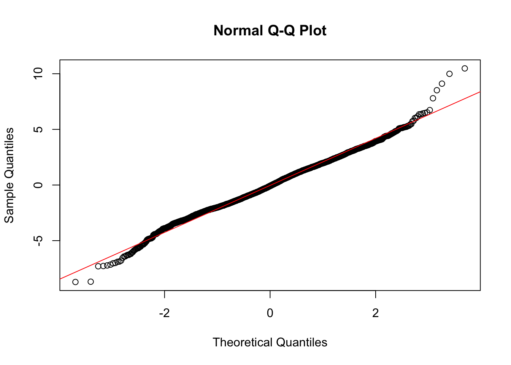
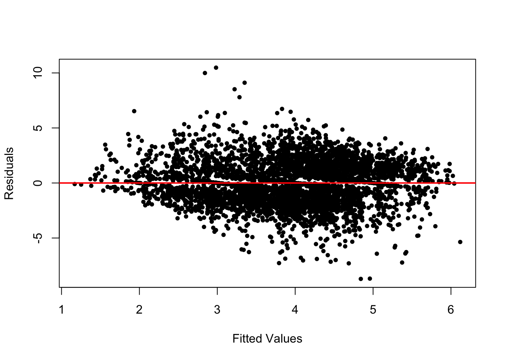

Chapter 11 Evaluating and Extending Linear Models
Chapter 11 introduces common problems and remedies to linear models, and how to explore interactive relationships.
Learning objectives and chapter resources
By the end of this chapter, you should be able to (1) construct and interpret diagnostic plots of model residuals and fitted values; (2) identify patterns in residuals to evaluate potential violations of linear model assumptions, such as nonlinearity, error variance, and normality; (3) interpret measures to identify observations as outliers, leverage, and influence; (4) specify and interpret a capturing conditional, interactive relationships between two independent variables. The material in the chapter requires the following packages: survey (Lumley 2021), dplyr (Wickham, François, et al. 2023) and tibble (Müller and Wickham 2023) from the tidyverse (Wickham 2023b), and a new package requiring installation, car (Fox, Weisberg, and Price 2022). The material uses the following dataset: anes 2020 survey.rdata from https://faculty.gvsu.edu/kilburnw/inpolr.html.
11.1 Examining assumptions underpinning linear models
The assumptions discussed in Chapter 10 about ordinary least squares (OLS) regression form the foundation for evaluating linear models. These assumptions are critical for accurately estimating slopes and y-intercepts and for making valid inferences to population parameters. When these assumptions are violated, the resulting models may be unreliable. Diagnostic tools allow us to detect potential problems, including model misspecification, nonlinearity, nonconstant error variance (heteroskedasticity), or problematic observations like outliers and high leverage points.
The starting point for linear model diagnostics is analyzing residuals. Residuals are a proxy for the unobservable errors \(e\) in the population regression model and provide insight into the validity of the model’s assumptions. The most fundamental diagnostic plot is the scatterplot of residuals versus fitted values, used to check for linearity, constant error variance, and normality of residuals. Beyond residual analysis, we also evaluate individual observations for leverage, influence, or outlying behavior.
This chapter illustrates common diagnostic techniques using regmodel4, the demographic model of party identification introduced in Chapter 10: svyglm(formula = partyid_num ~ edu + sex + race_category + age + attend_num + never_married, design = anes2020_design). We will examine common diagnostic tools to detect and address potential issues in linear models. Some diagnostic tools are not directly compatible with svyglm(), so the complex survey design potentially complicates the interpretation of these tools. For example, residuals in survey-weighted models should be weighted to reflect the contribution of each observation to the regression model. The clustering and stratification in the survey can potentially introduce artifacts in residual plots, such as within-cluster correlations. Yet on the upside, a common problem in cross sectional public opinion research is heteroscedasticity, and fortunately the larger standard errors in svyglm() generally address issues of non-constant error variance, reducing the need for additional corrections.
Despite these challenges, diagnostic tools remain essential for evaluating linear models. This chapter reviews a variety of approaches to assess residuals, fitted values, and observations to detect potential problems and ensure model robustness.
Residuals versus fitted values
As discussed in Chapter 10, the most fundamental tool for investigating linear models for problematic features is a plot of residuals versus fitted values. Typically, researchers look for residuals to appear in a random scatter without any clear pattern. Deviations from randomness could indicate a number of potential different problems. First, any clear curvature or systematic trends in the residuals suggests there may be nonlinearities present in the relationship between Y and any X, which would not be adequately modeled by a linear slope parameter. Second, if the residuals clearly increase or decrease in spread as fitted values increase, it indicates that the error variance is not constant – parts of the model fit worse than in other parts. Often it can lead to standard errors that are too small. Third, points that deviate from others within the figure may be evidence of outliers or influential data points, that could potentially influence the model’s parameters.
We use the residuals() function to extract residuals from the linear model object regmodel4, and fitted() for the fitted values. We start with the residuals. Typically, researchers inspect residuals for severe departures from normality.
A common starting point is to plot residuals, for example a histogram, hist(residuals) inspected for departures from normality. A quantile-quantile plot (QQplot) is often used to more explicitly compare the residuals against a normal distribution. The plot pairs quantiles of the model residuals with residuals from a hypothetical normal distribution, plotting them in pairs; the less the deviation of the observed residuals from the hypothetical, the observations should line up along the 45 degree line. Given the regmodel4 residuals, the base R functions qqnorm(residuals) will create the QQplot while qqline(residuals,col="red") will add a 45 degree line marking the equality of the two quantities.
Figure 11.1 displays the QQ plot of residuals from regmodel4, showing party identification as a function of demographic characteristics. The residuals appear to approximate a normal distribution through the central portion of the plot, where the points closely align with the diagonal line. However, at the extremes (both tails), there are clear departures from normality, with points deviating above and below the line. This indicates the presence of outliers or extreme residuals, suggesting that the residuals are not perfectly normally distributed. While mild departures at the tails are not uncommon, they warrant further investigation to assess their potential impact on model assumptions and results.

FIGURE 11.1: Normal quantile–quantile (QQ) plot of residuals from the model of party identification as a function of demographic characteristics. The figure displays deviations from normality at the ends of the plot.
The second plot is residuals paired with fitted values. The residuals and fitted values can be combined into a dataframe for ggplot2, or plotted with the base R plot() function and as a reference abline() for a line drawn through the point at 0 on the residuals axis, as in Figure 11.2:
fitted_values<-fitted(regmodel4)
plot(fitted_values, residuals, xlab = "Fitted Values",
ylab = "Residuals", pch=20)
abline(h = 0, col = "red", lwd = 2) 
FIGURE 11.2: A plot of model residuals versus fitted values. The line is drawn through the 0 point on the vertical axis.
For the residuals to meet the assumptions of a linear model, they should be centered around zero and display no discernible pattern across the range of fitted values. In Figure 11.2, the residuals appear relatively random around the horizontal line at zero. However, there are notable outliers and a slight fanning pattern at both the lower and upper ends of the fitted values, suggesting heteroskedasticity — again, a violation of the constant error variance assumption.
This heteroskedasticity may arise for a few reasons. First, it could stem from the complex survey design of the data, where nonconstant error variance results from differing regional strata or interview clusters. Fortunately, the svyglm() estimator adjusts for this design effect by producing robust standard errors, so we need not be overly concerned about this source. Second, the heteroskedasticity may relate to the distribution of the party identification variable, which is concentrated at the extreme points of the scale (Strong Democrat or Strong Republican). The model’s demographic predictors may generate larger residuals for these strong partisans.
Addressing this issue could involve respecifying the model. Potential remedies include adding omitted variables to reduce bias, introducing interaction terms to account for conditional relationships, or considering alternative estimators. For instance, the assumption of one slope across all education levels may not hold, suggesting a more flexible specification. Nonetheless, most of these approaches require intermediate to advanced knowledge of linear modeling, which is beyond the scope of this book.
For now, despite the signs of heteroskedasticity, we proceed with the demographic model of party identification, as the tools available within the svyglm() framework sufficiently address design-based sources of variability.
While heteroskedasticity can undermine confidence in slope estimates, another potential issue is multicollinearity.
Collinearity of independent variables
Multicollinearity arises when two or more independent variables in a regression model are highly correlated, making it difficult to isolate their individual effects on the dependent variable. In such cases, the regression coefficients may become unstable, inflating standard errors and reducing the statistical significance of the predictors.
In the case of regmodel4, the highly significant slopes suggest that multicollinearity is unlikely to be a major concern. However, it is standard practice to assess multicollinearity explicitly using Variance Inflation Factors (VIFs).
VIFs measure how much the variance of a regression coefficient is increased due to correlations with other independent variables in the model. A VIF of 1 indicates no multicollinearity, while higher values signal stronger correlations, making it harder to disentangle a variable’s unique contribution to the model.
To calculate VIFs, we use the vif() function from the car package:
## GVIF Df GVIF^(1/(2*Df))
## edu 1.587 4 1.059
## sex 1.373 1 1.172
## race_category 1.461 1 1.209
## age 1.509 1 1.228
## attend_num 1.168 1 1.081
## never_married 1.690 1 1.300The VIFs appear under the heading GVIF. As expected, the VIFs for regmodel4 indicate that multicollinearity is not a concern. All values are close to 1, with the highest being 1.690 for never_married, suggesting only a small degree of variance inflation. Generally, VIF values exceeding 5 or 10 are considered a threshold for problematic multicollinearity that may require further attention.
For categorical predictors with multiple levels, the Generalized VIF (GVIF) adapts the standard VIF to account for the number of categories in the variable. By scaling the GVIF, it becomes easier to interpret, similar to the standard VIF used for numeric predictors. This adjustment ensures that multicollinearity is properly assessed in models that include both numeric and categorical predictors (Fox and Weisberg 2019).
Note that multicollinearity is not inherently problematic. While it can inflate standard errors and reduce the precision of individual slope estimates, it does not affect the overall fit or predictive power of the model. Addressing multicollinearity — for example, by dropping a variable or combining correlated predictors into a single index are some common ways to address it. Yet doing so should be guided by theoretical considerations rather than, for example, dropping a variable from a model simply because of a large VIF.
In this case, the low VIF values suggest that the predictors in regmodel4 are sufficiently independent, and their effects can be interpreted with confidence.
Unusual observations
Even with a large sample size as in regmodel4, it is important to check whether individual observations are disproportionately influencing the regression results. Such observations can distort slope estimates and undermine the reliability of the model. There are three key sources of “troublesome” observations: (1) outliers, which have excessively large residuals; (2) high leverage observations, which have unusual values on independent variables; and (3) influential observations, which combine both large residuals and high leverage.
To investigate these issues, we can use tools in base R to examine specific diagnostics: residuals to detect outliers, “hat” values to identify leverage points, and Cook’s distance to measure influence. In addition, the car package provides many additional tools for assessing all of these qualities, briefly reviewed in the Resources section of this chapter.
Outliers
Outliers are observations with unusually large residuals, meaning their actual values deviate significantly from the model’s predictions. A good starting point for detecting outliers is a residuals versus fitted values plot, which visually highlights observations that do not align with the overall trend. However, numerical diagnostics provide more precise tools for identifying these points.
Studentized residuals are standardized versions of the residuals, adjusted to account for the variability of each residual and the influence of the observation on the model. These residuals are calculated by dividing each residual by its estimated standard deviation. This adjustment makes it easier to compare residuals across observations and detect outliers. Typically, studentized residuals greater than 2 (or greater than 3 in large datasets, such as the ANES survey) signal potential outliers.
The rstudent() function calculates studentized residuals. The summary() function reports any potential outliers. Storing the residuals in stand_residuals:
## Min. 1st Qu. Median Mean 3rd Qu. Max.
## -4.304 -0.719 -0.041 -0.016 0.687 5.181Notably, some residuals exceed 4 in magnitude, indicating observations with extreme deviations. To count the number of residuals greater than 3 in absolute value (a common threshold for identifying severe outliers), we can apply the abs() and sum() functions:
## [1] 31While 31 outliers may seem notable, they represent a very small fraction of the overall sample size, making their impact on the model likely very limited. In smaller datasets, however, the presence of even a few outliers can pose a significant challenge. Researchers must carefully decide whether to exclude or retain such observations. And there is a tradeoff: Excluding outliers may reduce the influence of extreme observations but risks introducing selection bias, as the data may no longer fully represent the population. Including outliers ensures all observations are considered but may distort the model estimates, particularly the slopes and standard errors.
To determine whether these outliers meaningfully affect the model, we next investigate their leverage and influence on the regression results.
Leverage and influence
Leverage measures how much an observation influences the regression model’s fitted values based on its scores on the independent variables. Observations with high leverage are those that are far from the “center” of the independent variables — meaning they are distant from the mean values across all predictors. High leverage points can have a substantial impact on the regression results because of their unique positions.
High leverage alone does not always indicate a problematic observation. For an observation to disproportionately influence the model, it must combine high leverage with an unusually large residual (an outlier). This combination indicates that the observation significantly alters the slope estimates or fitted values.
A conventional rule of thumb is that leverage values (or “hat values”) exceeding 2 to 3 times the ratio of model parameters (number of slopes + intercept) to the sample size are considered unusually large. For instance, in the case of regmodel4, with approximately 20 to 30 model parameters and a sample size of 4433, the threshold for high leverage would be around 0.004 to 0.006.
To calculate leverage values, use hatvalues() with summary() :
## Min. 1st Qu. Median Mean 3rd Qu. Max.
## 0.000031 0.000889 0.001557 0.002255 0.002641 0.026908The results for regmodel4 indicate that some observations exceed the leverage threshold, as the maximum value is notably higher than the third quartile. These points warrant further examination to assess their influence on the model.
Cook’s distance combines two key diagnostics — a standardized residual and leverage — into a single statistic to identify influential observations. It measures how much the fitted regression values would change if a particular observation were removed. Observations with large Cook’s distance values can disproportionately affect the regression results.
To calculate Cook’s distance, use the cooks.distance() function and summary():
## Min. 1st Qu. Median Mean 3rd Qu. Max.
## 0.000000 0.000027 0.000104 0.000224 0.000265 0.005435A common rule of thumb is that observations with a Cook’s distance greater than \(\frac{4}{n}\) may be considered influential. Since Cook’s distance is always positive, and with \(n = 4433\), this threshold is \(\frac{4}{4433} \approx 0.0009\). Given that the maximum Cook’s distance in the model is only 0.005, none of the observations appear to be especially problematic.
In this section, we explored key diagnostic tools for evaluating the assumptions of linear regression models. By examining residuals for outliers, patterns, and non-constant variance, we checked for potential violations of linearity and homoskedasticity. Measures of leverage, studentized residuals, and Cook’s distance allowed us to identify observations that could disproportionately influence model estimates. While a few observations exhibited high leverage or large residuals, their overall impact on the model appears. minimal.
With confidence in the stability of our current model, we now turn to a more advanced topic: interaction terms. Interaction terms allow us to investigate how the relationship between one independent variable and the dependent variable changes depending on the level of another independent variable, a conditional relationship.
11.2 Exploring interactions in linear models
Religious belonging x behavior in party identification
The strength of the relationship between service attendance could vary depending on the religious tradition associated with the individual. For example, consider the evangelical Protestant religious tradition (see Steensland et al, for an explanation (2000)). It is, of course, likely that evangelical Protestants identify more strongly with the Republican party, relative to the rest of the American electorate. And overall, more frequent religious service attendance is associated with stronger Republican party identification. Yet it could also be that among evangelical Protestants, perhaps more frequent religious service attendance does not lead to stronger Republican party identification, relative to the electorate as a whole. This intuition implies an interaction between a religious belonging and behavior, instead of separate linear slopes for attendance and evangelical Protestant belonging.
To illustrate how a linear model accommodates this intuition, we simplify the model of party identification to three independent variables for each of these terms: \(X_{1evang}\) for evangelical identity, \(X_{2attend}\) for service attendance, and \(X_{1evang}*X_{2attend}\) for the interaction between the two. The model:
\[Y = a + b_1X_{1evang} + b_2X_{2attend}+b_3X_{1evang} \times X_{2attend}\]
For non-evangelicals, the value of \(X_{1evang}\) is 0, so the slope on the interaction term drops out of the term \(b_3 \times 0 \times X_{2attend}\), leaving
\[Y = a + b_1X_{1evang} + b_2X_{2attend}\] as the model.
For evangelicals, however, the value of \(X_{1evang}\) is 1, so the interaction term simplifies to \(b_3 \times 1 \times X_{2attend}\)=\(b_3 \times X_{2attend}\). This slope \(b_3X_{2attend}\) is added to the other slope on \(X_{2attend}\)
For evangelicals: \(Y = a + b_1X_{1evang} + (b_2 + b_3)X_{2attend}\)
For non-evangelicals: \(Y = a + b_1X_{1evang} + b_2X_{2attend}\)
The two equations display how the interaction alters the slope for attendance, conditional on evangelical identification.
To explore the model in data, we start with regmodel4 from Chapter 10. We create an indicator for a survey respondent’s belonging to the evangelical Protestant religious tradition. After attaching the necessary packages:
The variable evang is scored 1 for respondent belonging to the evangelical Protestant tradition, 0 otherwise. To explore an interaction between evangelical Protestant religious belonging and service attendance, we will treat service attendance attend as a numeric measure. The numeric variable for religious service attendance is attend_num.
To simplify the model, we will treat formal educational attainment as a numeric variable, edu. The edu variable from regmodel4 is converted to a numeric with as.numeric():
We will add one additional control, household income, as a numeric measure, to disentangle income from religious service attendance. (See the ANES codebook for scaling.)
anes_20 <- anes_20 %>%
mutate(income = fct_recode(V202468x,
NULL = "-9. Refused")) %>%
mutate(income = as.numeric(income))After creating new variables we have to rerun the svydesign() function:
anes2020_design<-svydesign(data = anes_20, ids = ~V200015c,
strata=~V200015d, weights=~V200015b, nest=TRUE)Then we run the model, including both the evang and service attendance variables:
regmodel5<-svyglm(partyid_num ~ edu + sex +
race_category + age + never_married + income+
evang + attend_num, design=anes2020_design)Observe the model output with summary(regmodel5). In the model output, you will notice that the evang slope (0.529) is statistically significant, as is attend_num (0.355), both factors on average leading individuals to stronger Republican party identification.
The interaction between evangelical Protestant identity and attendance is a multiplicative interaction, the product of evang times attend_num. Interaction terms can be specified in a model in two ways. In the anes_20 dataset, we could create a new variable as the product of the two terms: anes_20<-anes_20 %>% mutate(evangXattend = evang * attend_num). Or simply include the product of the two individual variables within the svyglm() function, as the last independent variable evangXattend_num :
regmodel6<-svyglm(partyid_num ~ edu + sex +
race_category + age + never_married + income +
evang + attend_num +
evang*attend_num, design=anes2020_design)To review the results and the differences between the two models, we will use the memisc (Elff 2023) package:
Storing each model results in mtable() :
Printing the table:
##
## Calls:
## Model 1: svyglm(formula = partyid_num ~ edu + sex + race_category + age +
## never_married + income + evang + attend_num, design = anes2020_design)
## Model 2: svyglm(formula = partyid_num ~ edu + sex + race_category + age +
## never_married + income + evang + attend_num + evang * attend_num,
## design = anes2020_design)
##
## ======================================================
## Model 1 Model 2
## ------------------------------------------------------
## (Intercept) 5.254*** 5.141***
## (0.177) (0.188)
## edu -0.225*** -0.222***
## (0.038) (0.038)
## sex: 2. Female/1. Male -0.375*** -0.377***
## (0.067) (0.066)
## race_category -1.420*** -1.418***
## (0.101) (0.102)
## age -0.013*** -0.013***
## (0.003) (0.003)
## never_married -0.589*** -0.575***
## (0.102) (0.102)
## income 0.006 0.006
## (0.007) (0.007)
## evang 0.529*** 1.030***
## (0.101) (0.228)
## attend_num 0.355*** 0.404***
## (0.032) (0.035)
## evang x attend_num -0.224*
## (0.094)
## ------------------------------------------------------
## Log-likelihood -8918.29 -8897.44
## N 4356 4356
## ======================================================
## Significance: *** = p < 0.001; ** = p < 0.01;
## * = p < 0.05Notice that the demographic characteristics for Model 1 remain relatively stable in Model 2. In the interactive Model 2, the slopes are interpreted as follows:
Starting at the bottom of the table, note the statistically significant slope of -0.224 on evang x attend_num. The negative sign on the slope indicates the association between increasing religious attendance on party identification is weaker for evangelicals compared to non-evangelicals. Specifically, for every one-unit increase in attend_num, the slope of attend_num decreases by -0.224 for evangelicals relative to non-evangelicals, meaning that increased service attendance does not strengthen Republican party identification to the extent that it does for the electorate as a whole. The p-value on the slope for evang X attend_num , while arguably on the cusp of statistical significance \((* = p < 0.05)\), nonetheless indicates that the difference slopes between evangelicals and non-evangelicals is statistically significant. The relationship between religious attendance and party identification depends, at least in part, on evangelical Protestant status.
The magnitude of the relationship between service attendance and party identification — for evangelicals – is the linear combination of the slopes for attend_num and the interactive term evangXattend_num: \(0.404+ (−0.224) = 0.181\). While for non-evangelicals a one-unit increase in religious attendance is associated with a .404 point stronger Republican party identification; for evangelicals, the association is about half that, .18 points.
A useful test is whether this combined effect for evangelicals is likely distinguishable from 0 in the population. — It could be, for instance, that while weaker than for non-evangelicals, the relationship is null in the population. The car package provides a function linearHypothesis() to test linear combinations of slopes against the null hypothesis that in the population, the linear combination is 0. The argument specifies the linear combination, with variable names from the model specified in the model, in this case regmodel6: attend_num + evang:attend_num = 0:
## Linear hypothesis test
##
## Hypothesis:
## attend_num + evang:attend_num = 0
##
## Model 1: restricted model
## Model 2: partyid_num ~ edu + sex + race_category + age + never_married +
## income + evang + attend_num + evang * attend_num
##
## Res.Df Df Chisq Pr(>Chisq)
## 1 42
## 2 41 1 4.61 0.032 *
## ---
## Signif. codes:
## 0 '***' 0.001 '**' 0.01 '*' 0.05 '.' 0.1 ' ' 1The linear hypothesis test evaluates whether the combined effect of religious service attendance plus the interaction with evangelical status equals zero, testing whether the slope for religious attendance among evangelicals is significantly different from zero while accounting for other predictors in the model. The test indicates the slope for evangelicals on religious service attendance is significantly different from 0 \(p=0.032\). The result indicates that religious attendance has a statistically significant, albeit weaker, relationship with party identification among evangelicals.
Interaction terms are symmetrical, and can be interpreted from the other perspective – considering nominal affiliation with evangelical Protestantism and how it relates to party identification as religious service attendance changes. The coefficient for evang, 1.02962, represents the influence of being an evangelical on party identification when religious attendance attend_num is at 0, or not attending. Being a nominal evangelical (who never attends religious services) is associated with an increase of approximately 1.03 points on the party identification scale (shifting toward stronger Republican identification), compared to a non-evangelical who also never attends services.
The influence of being evangelical on party identification, as service attendance increases, depends on the combination of the slope and the interaction term. Among non-attending evangelicals the impact of 1.0296 is the result of \(1.02962+ (−0.22359 * 0)=1.02962\). Yet as attendance increases to 3, the impact reduces to \(1.02962 + (−0.22359*3) = 1.02962−0.67077 = 0.35885\). At weekly service attendance levels, the effect of being evangelical decreases to about a third of the level for nomina,l (non-attending) evangelicals.
Model based predictions
Given the model, we can explore model-based predictions from the interaction term, via predict() . Like before, we create the prediction dataset, specifying ‘average’ values for the independent variables and particular combinations of the interaction terms. For example, we may be interested in calculating the model based prediction of a party identification for an evangelical who does not report attending religious services, versus one who attends services weekly. The prediction dataset contrasts service attendance values (0 and 3) and average characteristics, a male with some post high school education or training , 45 years old, and a household income of 65,000 to 69,999 USD (12th quantile), married or divorced:
predictiondata <- tribble(
~edu, ~sex, ~race_category, ~age, ~never_married, ~income, ~evang,
~attend_num,
3, "1. Male", 0, 45, 0, 12, 1, 3,
3, "1. Male", 0, 45, 0, 12, 1, 0)Given the prediction dataset, the model based predictions and 95 percent confidence intervals:
## 2.5 % 97.5 %
## 1 5.306 5.771
## 2 4.568 5.425The model based predictions show that a weekly attending evangelical Protestant, given the other characteristics on average identifies as an Independent-leaning Republican (5.33), while a nominal evangelical identifies closely on the scale (4.79), but more Independent.
11.3 Testing and refining linear models
Presenting and interpreting regression results requires thoughtful model specification and a clear strategy for communicating findings. A standard approach involves presenting a series of nested models, starting with a parsimonious specification focused on the primary relationships of interest and gradually adding covariates as control variables. The models are combined into a table such as reg_table presented in this chapter. It is not uncommon to see three or four models specified this way. This stepwise approach, a sensitivity analysis, assesses the stability of the primary slopes of interest, as additional control variables are introduced. It also helps distinguish between potential sources of spuriousness (confounding variables) and mediation (variables that explain part of the relationship). Whether a variable serves as a confounder or mediator should be guided by prior theory and literature.
When interpreting model estimates, pay close attention to patterns in slope changes across model specifications; a decrease in magnitude when adding controls may indicate partial mediation or confounding effects. Remember, adding variables to a model effectively moves their relationship with the dependent variable out of the error term and into the model, isolating their contribution. A good linear model requires careful, theory drive model specification and clear sensitivity analysis to provide for drawing valid conclusions and effective communication about the sensitivity of the model to alternative specifications.
Resources
Further investigating the assumptions underlying linear models requires an intermediate-to-advanced study. See Urdinez and Cruz (2022) for specific statistical tests and remedies for common problems in regression models. See Fox and Weinberg (2019) for methods of applying the car (Fox, Weisberg, and Price 2022) package to graphically exploring interactive relationships in linear models. The car package includes two functions, qqPlot() and residualPlot() (note the capitalization) with additional nonlinear trend lines to assess departures from normality. There are also additional graphical plot types for more advanced study in the car package.
11.4 Exercises
Knit your R code into a document to answer the following questions:
In the 2020 ANES dataset, find a 7 point issue attitude scale and construct a demographic linear model, with three independent variables such as educational attainment, gender, and race. (a) Create a residuals vs. fitted values plot. Interpret whether the residuals suggest any violations of linearity or homoskedasticity. (b) Generate a QQplot of the residuals and assess whether the residuals follow a normal distribution. In a paragraph, summarize your findings and discuss whether the assumptions of the linear model appear reasonable.
For the same model, calculate Cook’s distances and identify any observations exceeding the rule-of-thumb threshold. Summarize whether these observations appear to unduly influence the model and suggest possible next steps.
Build a regression model to explore the interaction between a religious tradition and religious service attendance on party identification, similar to the model presented in this chapter. Interpret the coefficient for the interaction term. What does it imply about how the relationship between attendance and party identification differs for the chosen religious group? Present and interpret model-based predictions to interpret the results.